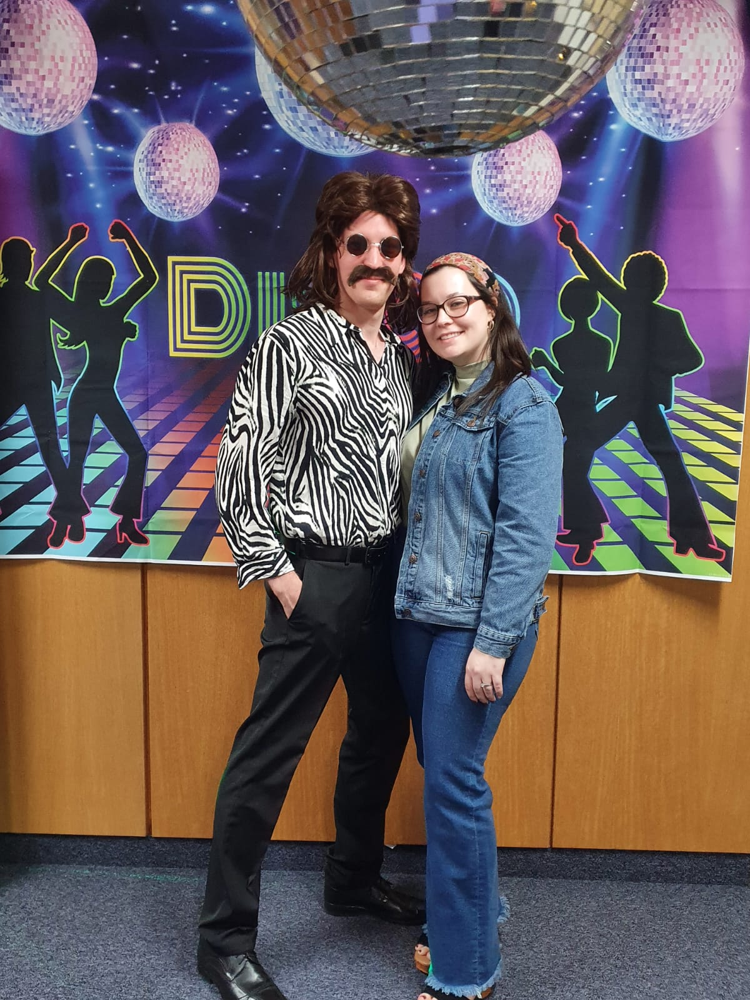

Originally when I received my associates in Applied Health from BYU-I in 2017, I thought I would work in the field of Epidemiology. While health will always be a passion of mine, and I pride myself in staying up-to-date on the field of health, I decided I wanted to get outside of my comfort zone. In 2021 I went back to school to pursue a bachelors in Applied Technology, and I have loved every minute spent learning new programs and languages.
I am hoping to become a Python Developer, however I also really love Web Design, so many Full Stack Developer is the career for me.
I've been married for 6 wonderful years to my Austrian husband Emanuel, and we have a coated xoloitzcuintli named Mr. Bean.
Hobbies are so important to me as I value work life balance. I enjoy reading fantasy novels, pc gaming, going to concerts, and taking long walks with my family.
Currently I work part-time as a social media manager for a breeder/boarding facility. I also help with site maintenance for their website. As of now we're doing a complete overhaul and hoping to relaunch in the next few months.
